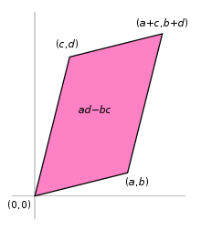

linear algebra
view markdownlinear basics
notation
- $x \preceq y$ - these are vectors and x is less than y elementwise
- $X \preceq Y$ - matrices, $Y-X$ is PSD
- $v^TXv \leq v^TYv :: \forall v$
linearity
- inner product $<X, Y> = tr(X^TY) = \sum_i \sum_j X_{ij} Y_{ij}$
- like inner product if we collapsed into big vector
- linear
- symmetric
- gives angle back
- linear
- superposition $f(x+y) = f(x)+f(y) $
- proportionality $f(k\cdot x) = k \cdot f(x)$
- bilinear just means a function is linear in 2 variables
- vector space
- closed under addition
- contains identity
- det - sum of products including one element from each row / column with correct sign
- absolute value = area of parallelogram made by rows (or cols)

- lin independent: $c_1x_1+c_2x_2=0 \implies c_1=c_2=0$
-
cauchy-schwartz inequality: $ x^T y \leq x _2 y _2$ -
implies triangle inequality: $ x+y ^2 \leq ( x + y )^2$
-
matrix properties
- $x^TAx = tr(xx^TA)$
- nonsingular = invertible = nonzero determinant = null space of zero
- only square matrices
- rank of mxn matrix- max number of linearly independent columns / rows
- rank==m==n, then nonsingular
- ill-conditioned matrix - matrix is close to being singular - very small determinant
- inverse
- orthogonal matrix: all columns are orthonormal
- $A^{-1} = A^T$
-
preserves the Euclidean norm $ Ax _2 = x _2$
- if diagonal, inverse is invert all elements
- inverting 3x3 - transpose, find all mini dets, multiply by signs, divide by det
- psuedo-inverse = Moore-Penrose inverse $A^\dagger = (A^T A)^{-1} A^T$
- if A is nonsingular, $A^\dagger = A^{-1}$
- if rank(A) = m, then must invert using $A A^T$
- if rank(A) = n, then must use $A^T A$
- inversion of matrix is $\approx O(n^3)$
- inverse of psd symmetric matrix is also psd and symmetric
- if A, B invertible $(AB)^{-1} = B^{-1} A^{-1}$
- orthogonal matrix: all columns are orthonormal
- orthogonal complement - set of orthogonal vectors
- define R(A) to be range space of A (column space) and N(A) to be null space of A
- R(A) and N(A) are orthogonal complements
- dim $R(A)$ = r
- dim $N(A)$ = n-r
- dim $R(A^T)$ = r
- dim $N(A^T)$ = m-r
- adjoint - compute with mini-dets
- $A^{-1} = adj(A) / \det(A)$
- Schur complement of $X = \begin{bmatrix} A & B \ C & D\end{bmatrix}$
- $M/D = A - BD^{-1}C$
- $M/A = D-CA^{-1}B$
- $X \succeq 0 \iff M/D \succeq 0$
matrix calc
- overview: imagine derivative $f(x + \Delta)$
- function f: $\text{anything} \to \mathbb{R}^m$
- gradient vector $\nabla_A f(\mathbf{A})$- partial derivatives with respect to each element of A (vector or matrix)
- gradient = $\frac{\partial f}{\partial A}^T$
- these next 2 assume numerator layout (numerator-major order, so numerator constant along rows)
- function f: $\mathbb{R}^n \to \mathbb{R}^m$
- Jacobian matrix: \(\mathbf J = \begin{bmatrix} \dfrac{\partial \mathbf{f}}{\partial x_1} & \cdots & \dfrac{\partial \mathbf{f}}{\partial x_n} \end{bmatrix}= \begin{bmatrix} \dfrac{\partial f_1}{\partial x_1} & \cdots & \dfrac{\partial f_1}{\partial x_n}\\ \vdots & \ddots & \vdots\\ \dfrac{\partial f_m}{\partial x_1} & \cdots & \dfrac{\partial f_m}{\partial x_n} \end{bmatrix}\) - this is dim(f) x dim(x)
- function f: $\mathbb{R}^n \to \mathbb{R}$
- 2nd derivative is Hessian matrix
- $\bold H = \nabla^2 f(x)_{ij} = \frac{\partial^2 f(x)}{\partial x_i \partial x_j} = \begin{bmatrix} \dfrac{\partial^2 f}{\partial x_1^2} & \dfrac{\partial^2 f}{\partial x_1\,\partial x_2} & \cdots & \dfrac{\partial^2 f}{\partial x_1\,\partial x_n} \[2.2ex] \dfrac{\partial^2 f}{\partial x_2\,\partial x_1} & \dfrac{\partial^2 f}{\partial x_2^2} & \cdots & \dfrac{\partial^2 f}{\partial x_2\,\partial x_n} \[2.2ex] \vdots & \vdots & \ddots & \vdots \[2.2ex] \dfrac{\partial^2 f}{\partial x_n\,\partial x_1} & \dfrac{\partial^2 f}{\partial x_n\,\partial x_2} & \cdots & \dfrac{\partial^2 f}{\partial x_n^2}\end{bmatrix}$
- 2nd derivative is Hessian matrix
- examples
- $\nabla_x a^T x = a$
- $\nabla_x x^TAx = 2Ax$ (if A symmetric, else $(A+A^T)x)$)
- $\nabla_x^2 x^TAx = 2A$ (if A symmetric, else $A+A^T$)
- $\nabla_x \log : \det X = X^{-1}$
- we can calculate derivs of quadratic forms by calculating derivs of traces
- $x^TAx = tr[x^TAx] = tr[xx^TA]$
- $\implies \frac{\partial}{\partial A} x^TAx = \frac{\partial}{\partial A} tr[xx^TA] = [xx^T]^T = xx^T$
-
useful result: $\frac{\partial}{\partial A} log A = A^{-T}$
norms
- def
- nonnegative
- definite f(x) = 0 iff x = 0
- proportionality (also called homogenous)
- triangle inequality
- properties
- convex
vector norms
-
$L_p-$norms: $ x p = (\sum{i=1}^n x_i ^p)^{1/p}$ - $L_0$ norm - number of nonzero elements (this is not actually a norm!)
-
$ x _1 = \sum x_i $ -
$ x _2$ - Euclidean norm -
$ x _\infty = \max_i x_i $ - also called Cheybyshev norm
- quadratic norms
-
P-quadratic norm: $ x _P = (x^TPx)^{1/2} = P^{1/2} x 2$ where $P \in S{++}^n$
-
- dual norm
-
given a norm $ \cdot $, dual norm $ z _* = sup{ z^Tx : : x \leq 1}$ - dual of the dual is the original
- dual of Euclidean is just Euclidean
- dual of $l_1$ is $l_\infty$
- dual of spectral norm is some of the singular values
-
matrix norms
-
schatten p-norms: $ X _p = (\sum \sigma^p_i(A) )^{1/p}$ - note this is nice for organization but this p is never really mentioned -
p=1: nuclear norm = trace norm: $ X _* = \sum_i \sigma_i$ - p=2: frobenius norm = euclidean norm: $||X||F^2 = \sqrt {\sum{ij} X_{ij}^2} = \sqrt{\sum_i \sigma_i^2}$ - like vector $L_2$ norm
-
p=$\infty$: spectral norm = $\mathbf{L_2}$-norm (of a matrix) = $ X 2 = \sigma\text{max}(X) $
-
-
entrywise norms
- sum-absolute-value norm (like vector $l_1$)
- maximum-absolute-value norm (like vector $l_\infty$)
- operator norm
-
let $ \cdot _a$ and $ \cdot _b$ be vector norms -
operator norm $ X _{a,b} = sup{ Xu _a : : u _b \leq 1 }$ - represents the maximum stretching that X does to a vector u
- if using p-norms, can get Frobenius and some others
-
eigenstuff
eigenvalues intro - strang 5.1
- nice viz
- elimination changes eigenvalues
- eigenvector application to diff eqs $\frac{du}{dt}=Au$
- soln is exponential: $u(t) = c_1 e^{\lambda_1 t} x_1 + c_2 e^{\lambda_2 t} x_2$
- eigenvalue eqn: $Ax = \lambda x \implies (A-\lambda I)x=0$
- $det(A-\lambda I) = 0$ yields characteristic polynomial
- eigenvalue properties
- 0 eigenvalue $\implies$ A is singular
- eigenvalues are on the main diagonal when the matrix is triangular
- expressions when $A \in \mathbb{S}$
- $\det(A) = \prod_i \lambda_i$
- $tr(A) = \sum_i \lambda_i$
-
$ A _2 = \max \lambda_i $ -
$ A _F = \sqrt{\sum \lambda_i^2}$ - $\lambda_{max} (A) = \sup_{x \neq 0} \frac{x^T A x}{x^T x}$
- $\lambda_{min} (A) = \inf_{x \neq 0} \frac{x^T A x}{x^T x}$
- defective matrices - lack a full set of eigenvalues
- positive semi-definite: $A \in R^{nxn}$
- basically these are always symmetric $A=A^T$
- all eigenvalues are nonnegative
- if $\forall x \in R^n, x^TAx \geq 0$ then A is positive semi definite (PSD)
- like it curves up
- Note: $x^TAx = \sum_{i, j} x_iA_{i, j} x_j$
- if $\forall x \in R^n, x^TAx > 0$ then A is positive definite (PD)
- PD $\to$ full rank, invertible
- PSD + symmetric $\implies$ can be written as Gram matrix $G = X^T X $
- if X full rank, then $G$ is PD
- PSD notation
- $S^n$ - set of symmetric matrices
- $S^n_+$ - set of PSD matrices
- $S^n_{++}$ - set of PD matrices
strang 5.2 - diagonalization
- diagonalization = eigenvalue decomposition = spectral decomposition
- assume A (nxn) is symmetric
- $A = Q \Lambda Q^T$
- Q := eigenvectors as columns, Q is orthonormal
- only diagonalizable if n independent eigenvectors
- not related to invertibility
- eigenvectors corresponding to different eigenvalues are lin. independent
- other Q matrices won’t produce diagonal
- there are always n complex eigenvalues
- orthogonal matrix $Q^TQ=I$
- examples
- if X, Y symmetric, $tr(YX) = tr(Y \sum \lambda_i q_i q_i^T)$
- lets us easily calculate $A^2$, $sqrt(A)$
- eigenvalues of $A^2$ are squared, eigenvectors remain same
- eigenvalues of $A^{-1}$ are inverse eigenvalues
- eigenvalue of rotation matrix is $i$
- eigenvalues for $AB$ only multiply when A and B share eigenvectors
- diagonalizable matrices share the same eigenvector matrix S iff $AB = BA$
- generalized eigenvalue decomposition - for 2 symmetric matrices
- $A = V \Lambda V^T$, $B=VV^T$
strang 6.3 - singular value decomposition
- SVD for any nxp matrix: $X=U \Sigma V^T$
- U columns (nxn) are eigenvectors of $XX^T$
- columns of V (pxp) are eigenvectors of $X^TX$
- r singular values on diagonal of $\Sigma$ (nxp) - square roots of nonzero eigenvalues of both $XX^T$ and $X^TX$
- like rotating, scaling, and rotating back
- SVD ex. $A=UDV^T \implies A^{-1} = VD^{-1} U^T$
- $X = \sum_i \sigma_i u_i v_i^T$
- properties
- for PD matrices, $\Sigma=\Lambda$, $U\Sigma V^T = Q \Lambda Q^T$
- for other symmetric matrices, any negative eigenvalues in $\Lambda$ become positive in $\Sigma$
- for PD matrices, $\Sigma=\Lambda$, $U\Sigma V^T = Q \Lambda Q^T$
- applications
- very numerically stable because U and V are orthogonal matrices
- condition number of invertible nxn matrix = $\sigma_{max} / \sigma_{min}$
- $A=U\Sigma V^T = u_1 \sigma_1 v_1^T + … + u_r \sigma_r v_r^T$
- we can throw away columns corresponding to small $\sigma_i$
- pseudoinverse $A^+ = V \Sigma^+ U^T$
strang 5.3 - difference eqs and power $A^k$
- compound interest
- solving for fibonacci numbers
- Markov matrices
- steady-state Ax = x
- corresponds to $\lambda = 1$
- stability of $u_{k+1} = A u_k$
-
stable if all eigenvalues satisfy $ \lambda_i $ <1 -
neutrally stable if some $ \lambda_i =1$ -
unstable if at least one $ \lambda_i $ > 1
-
- Leontief’s input-output matrix
- Perron-Frobenius thm - if A is a positive matrix (positive values), so is its largest eigenvalue and every component of the corresponding eigenvector is also positive
- useful for ranking, etc.
- power method: want to find eigenvector $v$ corresponding to largest eigenvalue
-
$v = \underset{n \to \infty}{\lim} \frac{A^n v_0}{ A^nv_0 }$ where $v_0$ is nonnegative
-